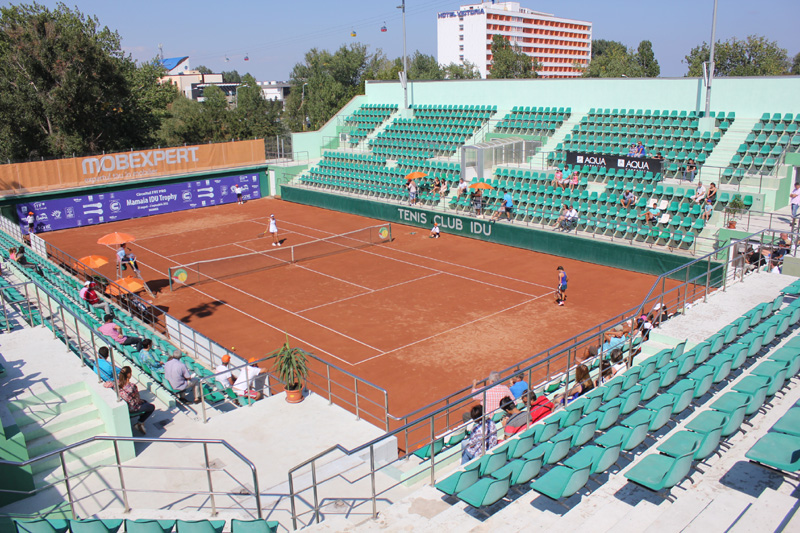

Tenis Club Idu
Tenis Club Idu este cel mai mare club de tenis din județul Constanța, cu o istorie bogată și mulți sportivi formați. Locația clubului are o tradiție de peste 40 de ani de existență, fiind un loc foarte vizitat de sportivi din toată lumea, de pasionați de tenis și de turiști doritori de a face mișcare în timpul vacanței la mare. Prima denumire a clubului a fost Tenis Club Sen, numele venind de la cei doi antrenori fondatori, Sandu Tudor și Ene Nicolae, care au construit 4 terenuri de zgura, iar ulterior, la începutul anilor 2000 clubul a fost preluat de Idu Cornel. Numele nou al bazei devenise Tenis Club Idu, crescând mult că nivel de baza sportivă, construindu-se încă 2 terenuri și o arenă de tenis cu o capacitate de peste 2000 de locuri. Până în prezent, clubul a găzduit nenumărate concursuri internaționale de tenis, cel mai important fiind turneul Idu Challanger Trophy, unde se adunau jucători din top 100 mondial, premiile fiind în totalul a 50.000$. De asemenea, se pune mult accent pe antrenamente și creșterea sportivilor începând de la vârste mici. Foarte mulți tenismeni au trecut prin antrenamentele de la Tenis Club Idu, cea mai cunoscută sportivă fiind Simona Halep, fosta numărul 1 mondial.
Despre noi
Programele de pregătire sportiva sunt destinate tuturor jucătorilor, indiferent de vârstă sau nivel de experiență. Selecția, inițierea, pregătirea și perfecționarea continue au scopul de a le maximiza acestora potențialul și de a preveni accidentările specifice. Întreg procesul de pregătire se încadrează într-un plan de dezvoltare pe termen lung ca și model de lucru, folosindu-se o metodă de predare cât mai eficientă și activități inter-disciplinare, asigurate de specialiști atestați. Astfel, Tenis Club Idu beneficiază de un număr de 7 antrenori de tenis, un antrenor pe partea fizica și un psiholog sportiv. Antrenorii de tenis sunt repartizați după vârstă sau după nivelul de joc al sportivilor, fiecare având un program stabilit. Antrenorii de inițiere învață persoanele care ajung pentru prima dată pe terenul de tenis, ajutandu-i să asimileze primele mișcări ale corpului necesare pe teren, să îi ducă către un nivel mediu, iar pe copii să îi învețe cum este un meci de tenis și să meargă la primele concursuri ale lor.
-
Ceilalți antrenori dau antrenamente celor cu un nivel de joc mediu sau mai bun, antrenamentele fiind mai complexe, jucătorii trebuie să învețe să dezvolte
un joc cât mai variat și să se adapteze oricărui adversar la concursuri. Pe lângă jocul cu racheta și cu mingea, la un nivel mai înalt este necesară și o pregătire fizica cât mai bună,
meciurile devenind din ce în ce mai solicitante pe măsură ce nivelul crește. După fiecare antrenament, se face pregătire fizică unde se dezvoltă mișcarea picioarelor în teren, forță jucătorului,
rezistența la oboseala. Mai sunt și ședințele cu psihologul sportiv unde se studiază toate cazurile ce se întâlnesc în acest sport, psihologul fiind menit să ajute pe sportivi să gândească cât mai limpede,
să facă față momentelor grele, să controleze furia și să intre cât mai pozitivi și ambițioși pe teren la fiecare meci.
-
În completarea programelor de pregătire sportivă de performanță, Tenis Club Idu organizează
competiții la nivel național și internațional pentru jucătorii de orice vârstă. Clubul din Mamaia este recunoscut pentru cât de multă atenție acordă organizării concursurilor,
creând condițiile cele mai bune de joc ale terenului și arbitri cât mai bine pregătiți care să ajute la bunul mers al competiției.